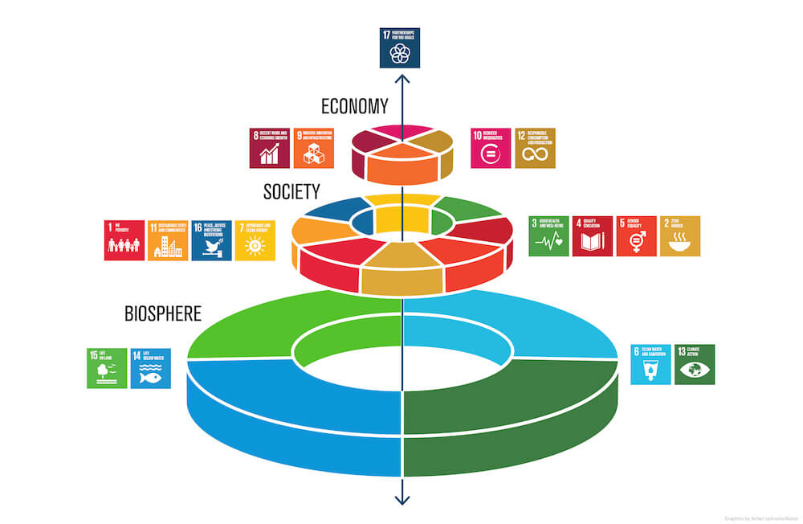

Metas
Saúde sexual
Até 2030, assegurar o acesso universal aos serviços de saúde sexual e reprodutiva, incluindo o planejamento familiar, informação e educação, bem como a integração da saúde reprodutiva em estratégias e programas nacionais.

Doenças
Até 2030, acabar com as epidemias de AIDS, tuberculose, malária e doenças tropicais negligenciadas, e combater a hepatite, doenças transmitidas pela água, e outras doenças transmissíveis.

Medicamentos
Apoiar a pesquisa e o desenvolvimento de vacinas e medicamentos para as doenças transmissíveis e não transmissíveis, que afetam principalmente os países em desenvolvimento, proporcionar o acesso a medicamentos e vacinas essenciais a preços acessíveis, de acordo com a Declaração de Doha.
Poluição
Até 2030, reduzir substancialmente o número de mortes e doenças por produtos químicos perigosos, contaminação e poluição do ar e água do solo.
CEOs respondem sobre os ODS
Recentemente foram divulgados os resultados de uma pesquisa promovida pelo Pacto Global das Nações Unidas e a Accenture. Entre os mais de 1.000 CEOs que foram consultados:
87% consideram os ODS uma oportunidade essencial para repensar abordagens em relação à sustentabilidade.
49% afirmam que as empresas serão o agente mais importante para atingir estes objetivos.
85% qualificam as alianças intersetoriais como fundamentais para acelerar a transformação.
Ou seja, os líderes empresariais estão assumindo sua responsabilidade no processo e deverão se abrir cada vez mais para parcerias com governos, terceiro setor e sociedade civil em geral.
